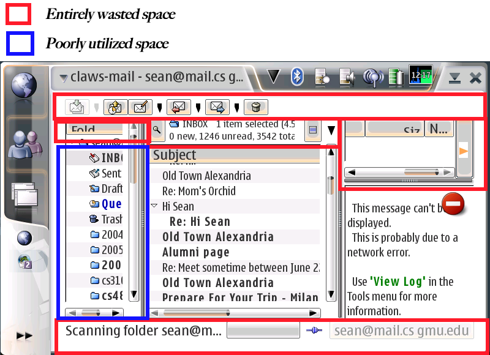
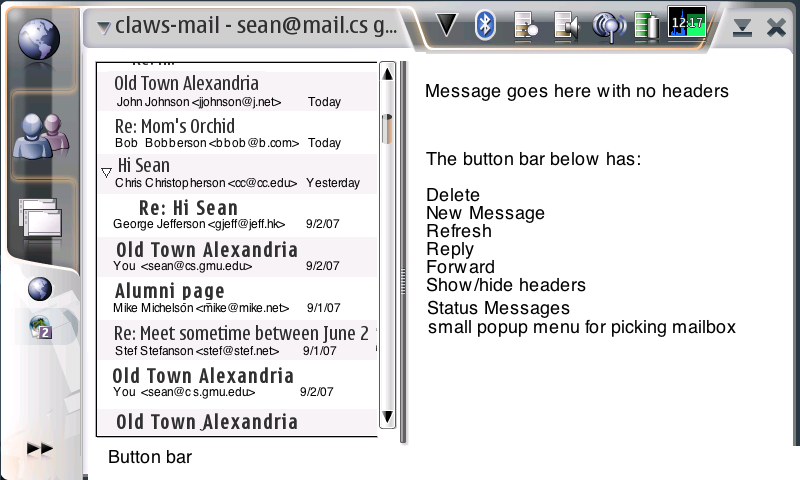
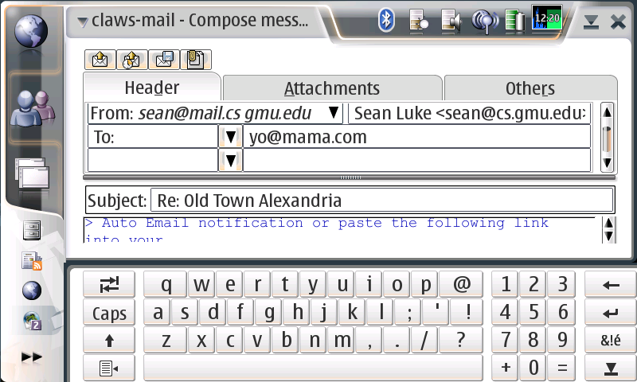
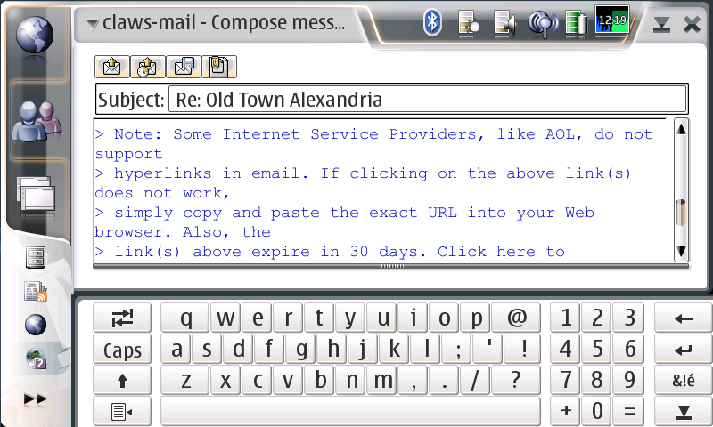

I recently came back from an extended trip to Italy. Okay, my wedding. With lots and lots of pictures to view, some movies and games to (hopefully) pass the time while travelling, and other basic needs I was hoping to extract from my N800. I came away with mixed results.
As an open source developer, I am acutely sensitive to criticism of my work: and I know perfectly well that, except for Nokia's applications (for which I think I should show no mercy), the apps below are all free. I'm getting exactly what I paid for. Still, as an open source developer I strongly believe that coding is our art, and open source is our sculpture. We are displaying our art for public view, and as art, it deserves to be criticized.
Still, I did spend some time to desnark this article. I hope it's not too offensive.
Blah blah blah. Okay, here we go. In the table below are nine applications I intended to use on my trip, with success or failure. Click on the link for the application to see a more extended review of the application, with criticisms.
| Application | Intended Use / Assessment | Assessment |
|---|---|---|
| Claws Mail | For: quick, remote reading and replies of US mail in Italy
But: slow, overwrought, missing basic features for remote viewing, surprisingly poor interface | D (desperately needs work) |
| Nokia Media Player | For: watching movies while flying and on trains, view movies created by my camera
But: rapidly gets out of sync, can't play Motion JPEG or trivial Quicktime | C (very bad for a media company) |
| Media Converter | For: encoding movies for Media Player
But: DVD encoding turned off because author is in Finland; scripts do not use mencoder features correctly, easily replaced with a single script. | F (sadly at present, of little value) |
| mplayer | For: watching movies while flying and on trains, view movies created by my camera
But: buggy, slow, dangerous crashes. Not ready for N800. | F (give it time) |
| Simple Launcher | For: One-tap launching of tasks
But: minor criticisms -- generally works well | A |
| Nokia Clock | For: Setting alarms, changing locations
But: does both tasks very poorly | C (and this is a cellphone company?) |
| AisleRiot Solitaire | For: Playing Solitaire
But: minor criticisms -- generally works well | A |
| Quiver | For: Viewing pictures created on my camera
But: nicely done, but crashy, slow, certain usability issues | B |
| MaemoPad+ | For: Writing notes
But: minor criticisms -- a bit slow -- but generally works well | A- |
Claws Mail
I hoped to use this application remotely in Italy as quick-and-dirty temporary email application while on my trip. And I'm more than impressed with the amount of effort that went into this program. But sadly I found it to be essentially useless. It's worth an extended discussion as to why.
I badly want to say good things about this application. After all, it is at present the only real replacement for Nokia's putrescent mail program, and it's clear that a ton of work went into the desktop version of the program. But I can't do it. Claws Mail is slow, is missing basic features, is filled to the brim with bulky, essentially worthless gizmos, and has an awful interface.
Nokia wants to market the N800 as an always-on internet device that you'd permanently stick on your couch or something. This is ridiculously quixotic and blinkered, and is the reason that Apple's going to eat Nokia's lunch. The N800 is a PDA. The usage pattern of the vast majority of its consumer base is: a device I can put in my pocket and store PDA-like info, play some games and media, and also take out in remote sites and hook to the internet for lightweight internet use. No one uses this thing as an always-on PC replacement. It's terrible at that. That's what laptops are for.
As a mail user on the N800, remotely, with limited or expensive bandwidth, I have two basic needs:
- Read in the top N messages rapidly
- Respond to certain of them with short. rapid responses
Claws mail hasn't figured this out yet. It does these two basic things surprisingly poorly, in the name of doing lots and lots of "big mail program" things as well, even though we don't need those extra things, and they just add bloat and interface confusion. The version for the N800 is just a squished down version of the Claws Mail program for standalone PCs and laptops. It can't work around port-25 restrictions or other issues common to remote mail usage. It can't load the top N most recent mail messages for offline viewing. It can't cache headers properly. And it succumbs to big-screen-itis and linux-widgititis. In short, it acts like an "always-on" mail program, when nearly everyone who's trying to use it (my guess) is trying to use it as a secondary lightweight mailer when they can't get to their laptop.
This let's-try-to-squeeze-a-big-program-into-a-little-space mentality is very evident in the poorly thought-out interface:
Claws Mail Main Screen
Above is the main screen of Claws Mail, configured in three-column format, which so far as I can tell is the best use of space available on the application. And yet by my count, almost 2/3 of the screen is wasted in functionality that has nothing to do with the basic task of this screen: reading email. The offenders:
- Not one but two button bars, one up top and one below, neither of which can be deleted. The button bar up top has tiny, hard-to-hit buttons, with even tinier pop-up menus wedged between the buttons which offers, so far as I can tell, no useful functionality whatsoever. The bar can be customized (good) but cannot be removed or placed in a less wasteful location on the screen. The bar on the bottom has no purpose except to provide status messages. Why couldn't these status messages be overlaid in the menu bar, say? Or at an rate, why can't we get rid of the bar?
- Not one but two headers for your selected mailbox. Consider that mailbox information is the least important thing presently on the screen. On a device this small, where the primary operation is "quick, check my INBOX". No one wants to check (in my case) their Sent Messges or their 2004 Backups. Repeat after me, Claws Mail folks: INBOX INBOX INBOX INBOX INBOX. Nobody cares about knowing what other mailbox options there are, how many items they have selected, how many unread messages there are, etc. We want, primarily, to check the most recent mail in our INBOX.
- (top right) A large message header display table. When reading mail quickly, I only want to see three things: the message body, who the message is from, and the subject of the message. Perhaps a disclosure triangle might allow me to see the following additional headers: who the message is to and cc:ed to, and when it was sent. Those should ordinarily be hidden. And if I can already see the subject -- in the list -- it shouldn't be displayed again. Thankfully this header thing can be mostly hidden. But not entirely: it still wastes a whole line.
- The Mailbox list. As mentioned earlier, changing your mailbox is a very very secondary operation in a lightweight mail program and should be relegated to a menu option at most. Thankfully this thing can be mostly hidden. But I have to unhide it every time I fire up the program because, as mentioned below, Claws Mail doesn't go straight to your INBOX when you start it. You have to do so manually. Every time you restart.
How the main screen ought to look:

There you go. Clean and easy to use. With a removable button bar which adheres to Nokia's standard look perhaps. The list and the message body are separated with a split-pane drag bar: the current location of this bar should be stored permanently when the user quits the program. And need I say that by default the mail program should load headers and mail from the INBOX?
Here's the mail-composition screen, where half of the window is wasted in extra-large tabs, button bars, at least four lines worth of headers:

Seriously: the blue text is the region for your message. Thankfully, if you click in the body text, the screen rearranges to give you a bit more space, but it's still pretty awful:

2/3 of the available area is wasted in headers and buttons, not to mention all the wasted white space all around. I'll leave redesign of all this to the reader as an exercise.
Claws Mail Isn't Designed For Simplified Mail
Or what I want, anyway, but I think most users are in the same boat. Mail on the N800 is not going to be our primary mail program. It is a secondary mail program for quick reads and replies. Claws mail was clearly designed to be a primary mail program on a computer with a large screen. It's very bad at quick checks and replies.
The program loads your whole INBOX, but headers only. I have thousands of messages in my INBOX. Why can't Claws Mail just load the last 100 headers, say? And load those 100 messages in the background?
Messages cannot be cached for later reading. As if users really were always online.
Claws Mail Can't Handle Failure. If Claws Mail fails to load a message -- mostly because it timed out too early -- you get the warning shown in the first screen above. Your only option is to view a log (which even I as a developer find worthless). What you can't doe is instruct Claws Mail to try again! So far as I can tell, to see the message, you have to quit the program, start again, load all your headers again, and retry.
Claws Mail has a Billion Minor Useless Features. The Configuration menu in Claws Mail is a real eye-opener:
- Change current account ->
- Preferences for current account...
- Create new account...
- Edit Accounts...
- Preferences...
- Pre-processing...
- Post-processing...
- Filtering...
- Templates...
- Actions...
- Plugins...
The "Tools" menu is twice this size. And each of these submenus leads to a tweaker's dreamland of option windows, resulting in a far overly complex program with tons of minor features that are never used, but instead serve to radically complexify the interface of the application and to slow it down. Claws Mail is drowning in widgetitis. It desperately, desperately needs someone to stand up and say: "As of today we are deleting 4/5 of our 'features' in the name of usability." Like what happened with Firefox. It's not the linux way though: featuritis is de rigeur.
Missing Basic Remote Mail Features. And yet, despite the zillion complexifying and generally worthless options in the mail program, Claws Mail lacks basic remote mail options. And not just its inability to cache headers or grab the top N messages rather than the whole INBOX for offline reading. There are other gotchas: for example, many ISPs block you from being able to access port 25 on any external machine. No problem: many places (such as GMU, my institution) allow you to access their SMTP server via an alternative port number. Except that Claws Mail has no way to do this -- so I can't send any mail remotely behind such an ISP -- like the one at my home -- at all. This is a very basic feature for remote mail. So here we have the development priority of the system: you can customize the button bar to your heart's content. But you can't send mail via a remote server if you're behind about half of the cable modem and DSL operators in the united states.
Claws Mail also can't act as a mail server: you have to hook up to an existing SMTP server no matter what. In many situations when you're doing remote mail, you may not be able to get to your home server, making Claws Mail somewhat impotent.
Media Player, Media Converter, and mplayer
Making Movies With and Without Media Converter
I have a bunch of videos (which I bought, thanks) in small format on the N800. They're not at a particularly high bitrate (400), and they're custom-fit for the N800's pixel doubling. Here's the magic script I built to do it, which works rather better than Media Coverter. It properly scales the movie and adds black bars on either the top or the sides depending on the aspect ratio.
mencoder dvd://1 -v -oac mp3lame -lameopts abr:br=64 -af volnorm -ovc lavc -lavcopts vcodec=mpeg4:vbitrate=400 -vf dsize=400:240:0:16,scale=0:0,expand=400:240,crop=400:240 -idx -ffourcc DIVX -ofps 24 -o movie.avi -aid 128
Obviously in this example movie.avi is the output movie file. If you're not getting the right audio channel, you might try a different one: -aid n where n is one of 128, 129, 130, 131, etc. You can see all the channels on the DVD by running in verbose mode first: mencoder dvd://1 -v
I'd have liked to have done this in Media Converter, but it suffers from two fatal flaws which have rendered it useless to me. First, its approach to scaling movies properly is broken and requires significant manual tweaking when it could have been close to automatic. The automatic pipeline in my script above works well, however. Second, Media Converter purposely has its dvd ripping option turned off, as it's not legal to have it in the author's country. I understand this, but as a result the app's functionality is reduced radically.
Media Player
Even at a modest 400 bitrate, Nokia's built-in Media Player can't keep up. Oh, it can play the video fine, but after a few minutes the sound get so out of sync with the video that it becomes irritating. Perhaps I need to modify the script to add some sync frames of some sort, but at present, I have to stop the movie, restart it, find the location where I had stopped it, and continue playing for another 5 minutes or so. Doing this forty times in the course of playing a movie is not an enjoyable experience.
Media Player also has a strong tendency to create permanent stutters in its video. You can't stop the stuttering short of stopping and quitting the program and restarting.
Last, Media Player can't play quite a number of basic formats. Most notably, it can't play Quicktime Files. Quicktime's wrapper format is a non-encumbered open specification and forms the core of MPEG-4. It's also the standard format for things like, say, my Panasonic digital camera. And it's the wrapper around the H.264 codec used in all of Apple's iPod movies. Nokia has no excuse not to make this format available, at least in the non-DRM version.
Media Player particularly failed me here in its inability to play Quicktime-wrapped Motion JPEG (MJPEG-A or MJPEG-B) files generated from the Panasonic DMC-TZ3. This is an absolutely trivial codec, basically the concatenation of JPEG images together in a long stream, and is by far the most common format created by digital cameras. The TZ3 wraps it in Quicktime wrappers, very convenient for my Mac, but very irritating on my N800.
mplayer
I tried getting around this by using mplayer instead. But mplayer is not ready for prime time. It's not been optimized for the N800 yet and so is quite slow. It also is not only highly crashy, but when it crashes it leaves zombie mplayer processes in the background which suck the life blood out of your processor without you realizing it. So while a crash of a normal application just requires you to restart the app, a crash on mplayer requires you to reboot your machine. Which you'll be doing a lot.
Simple Launcher
Simple Launcher is a desktop applet which does something that the N800 should have had built-in to begin with: it lets you launch applications with a single button press. It's clean and well-done, and the author is to be commended.
Some criticisms:
- There's no way to make the icons larger in order to easily press them with the finger. Think iPhone.
- There's no way to change the layout of the bar: it's one horizontal bar of some N items. I'd prefer a box of NxM or a vertical bar of M items as options. The author needs to provide resizing.
- It'd sure be nice to be able to attach custom UNIX commands to buttons. But that's just me.
Clock
Click on the clock applet and you're forced to load Nokia's Clock application, where you're presented with a big map of the world with your "home city" and "destination city", and that's about it.
Here's what I wanted to do, over and over again: change the city that I've traveled to temporarily. You'd think that was the destination city, but no. It's your "home city". The "destination city" has the sole function of telling you the current time difference. Okay fine. So what happens if you click on the map? Surely you can change your home city somehow. Nope. Click on the map and you change the destination city: you know, the city that's not very useful. Of course Nokia would have it dominate the functionality of the application.
Below the map are two large clocks, one for home and one for destination. Maybe by clicking on a clock I could change the home city? Nope. You can just change from analog to digital. Thanks. To change your home city -- likely the second most common thing you'd want to do with this application -- you have to go into a menu, then a submenu, then pop up a dialog box, and pick your city from a list, and press Okay. Four taps at a minimum.
The most common function of the application is, no doubt, to set an alarm. Nokia has screwed this one up too. To set the alarm you can either wend your way through a menu or click on the tiny bell icon hidden in the bottom left corner of the map. To set an alarm, you have to pop up a dialog box, often two more dialog boxes, the keyboard several times, and interact far more with the application than you'd think. If you want to change the day, you have to manually set the numbers or call up the calendar dialog box. You can't just press "next day" or anything. And if you're in the afternoon and pick a time in the morning, the app's not smart enough to realize you mean the next day and increment the day counter appropriately: it's fine letting you set alarms in the past. You only discover the problem when you press "okay" and are blocked from setting the alarm by another dialog box.
Oh yes. And the dialog boxes are microscopic. Nokia decided to cram its modal dialog boxes into as tiny a space as possible in order to make setting a new alarm as difficult as possible for you to do.
AisleRiot Solitaire
AisleRiot Solitaire is great. Eighty solitaire games (though I'm a loser and only play Klondike). Cleverly and cleanly done help and instructions for each game. First rate.
Some criticisms:
- You can't drag-and-drop cards. Irritating.
- You can't change certain game parameters, such as how many redeals you get in Klondike. Irritating.
- The program doesn't save state. When I quit the program and restart it, it should take me back to the same game situation I was in when I quit.
- The hints aren't by the smartest AI in the world.
Quiver
Quiver is the application I have had the highest hopes for in this collection. It's an image viewer with an iPhoto-like interface. Quiver's author has tried very hard to give the application an elegant sheen, and he is to be commended for it.
My needs for Quiver were simple: I'd generate a hundred or two hundred images on my camera, pop out the card, and stick it in my N800 to get a better look. That's what I wanted Quiver for. But I have run into some problems:
- Crashing. Quiver crashes a lot. Enough to be a significant hindrance to using the program. Quiver particularly crashes when you change to a directory it doesn't like -- it then goes into an infinite loop, churning through CPU cycles like nobody's business.
- Slow Loading. It takes Quiver quite a long time to load and display an image. Part of this, of course, is the expense incurred in downsampling a 7 megapixel image to fit in an 800x480 screen. But part of it is Quiver's tendency to put thumbnail generation in the foreground CPU-wise. I've talked to the author and he's worked to reduce this, but it's not enough. At this point I think Quiver really needs to work on optimizing the downsampling of images.
- Thumbnail Permanence and Cache Deletion. Quiver stored thumbnails in a directory on the machine. Unfortunately this cache doesn't work properly. If I take a card out put other cards in, then put the first card back in again, the thumbnails have to be regenerated. When you have 300 pictures on a card, this is a real problem. On top of it, those thumbnails are in a hidden cache that you can't easily clean out yourself.
- Rotation. The first thing I do in Quiver is go into full-screen mode and eliminate the button bar, thus giving maximum viewing space for the images. Unfortunately, the button bar is the only way you can rotate an image. And Quiver doesn't have a way to rotate an image except via the button bar. Let's say that an image has been auto-rotated by Quiver because its EXIF data says it's in portrait mode. I don't want that -- I want to see it take up as much space as possible so I can examine it. It should be in landscape mode. Quiver doesn't have a preference setting to turn off reading the EXIF orientation options and always display in the widest mode possible: and I can't rotate the image without going back to the button bar and pressing rotate. What Quiver needs to do is provide a preference option and let the user rotate the image by pressing the left/right cursor buttons (the top/bottom ones are appropriately used for shifting to the next image).
- Default Directories. When you fire up Quiver, it always displays the Images directory. Thing is: I never use that directory, and I imagine few Quiver users do. I use external cards that I just got from my camera. There's no way to tell Quiver to automatically peek inside one or both of those cards.
- Default Directories II. Even if Quiver did peek in the removable cards, it also isn't capable of doing a tree search from a directory (the card, say) and displaying all the images found. Instead you have to specify a subdirectory. This is a problem because most cameras don't store images directly on a card, but rather in a subsubdirectory (for my Panasonic, it's DCIM/PANA_n, where n is a number from 100, 101, ..., etc. This should be a simple and obvious task, and Quiver's failing here pretty badly.
I have high hopes for this application: it's really nicely done. But it needs tweaking. And a lot of crash debugging and optimization.
MaemoPad+
MaemoPad+ is a decent little note-taking program with a very responsive author. It can take notes both in text and as bitmap pictures, and stores them in its own database. MaemoPad+ has first-rate undo options. The program works nicely and I have only a few complaints:- You can't edit the menu titles once they've been created (!)
- Drawing in the bitmap is too slow. It tends to play catch-up with you in a disconcerting way. This needs significantly more optimization.
Very limited drawing options, particularly shapes.
- No vector drawing. In particular, no way to scribble handwriting and have it be stored as vector information in an infinite and zoomable canvas, rather than a finite-width bitmap canvas. Coming from a Newton, I really miss that. No way to draw vector circles, lines, rects, etc.
You can't tell what kind of memo you have (text, list, bitmap) just by looking at it in the memo list.
The memo hierarchy cannot be changed. You should be able to drag and drop to change the hierarchy, but you cannot.